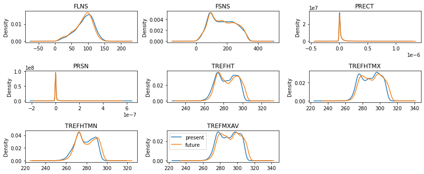

Example for CESM2 Climate Change
Here, we load present (2016-01-02 to 2035-12-31) and future (2066-01-02 to 2085-12-31) data, and evaluate the applicability of a machine learning model trained on the present climate for predicting future urban climate.
NOTE: Compared to the CESM1 demo, here “Q” (QBOT), “U” (UBOT) and “V” (VBOT) are not included. When the bottom “lev” of “Q”, “U”, and “V” are merged, there is an issue.
Reference:
- GitHub: https://github.com/NCAR/cesm2-le-aws
- Data/Variables Information: https://ncar.github.io/cesm2-le-aws/model_documentation.html#data-catalog
- Reproduce CESM-LENS: https://github.com/NCAR/cesm2-le-aws/blob/main/notebooks/kay_et_al_lens2.ipynb
Step 0: load necessary packages and define parameters (no need to change)
[1]:
%%time
# Display output of plots directly in Notebook
%matplotlib inline
import matplotlib.pyplot as plt
import pandas as pd
import json
from flaml import AutoML
from sklearn.metrics import mean_squared_error, r2_score
from sklearn.model_selection import train_test_split
import math
import seaborn as sns
import util
import gc
import warnings
warnings.filterwarnings("ignore")
CPU times: user 1.76 s, sys: 338 ms, total: 2.1 s
Wall time: 2.1 s
/glade/work/zhonghua/miniconda3/envs/aws_urban/lib/python3.8/site-packages/xgboost/compat.py:31: FutureWarning: pandas.Int64Index is deprecated and will be removed from pandas in a future version. Use pandas.Index with the appropriate dtype instead.
from pandas import MultiIndex, Int64Index
Step 1: load future data (2066-01-02 to 2085-12-31)
[2]:
with open("./config_cesm2_climate_future.json",'r') as load_f:
# param = json.loads(json.load(load_f))
param = json.load(load_f)
model = param["model"] # cesm2
urban_type = param["urban_type"] # md
city_loc = param["city_loc"] # {"lat": 40.0150, "lon": -105.2705}
l_component = param["l_component"]
a_component = param["a_component"]
experiment = param["experiment"]
frequency = param["frequency"]
cam_ls = param["cam_ls"]
clm_ls = param["clm_ls"]
forcing_variant = param["forcing_variant"]
time = slice(param["time_start"],param["time_end"])
member_id = param["member_id"]
# estimator_list = param["estimator_list"]
# time_budget = param["time_budget"]
features = param["features"]
label = param["label"]
clm_var_mask = param["label"][0]
# get a dataset
ds = util.get_data(model, city_loc, experiment, frequency, member_id, time, cam_ls, clm_ls,
forcing_variant=forcing_variant, urban_type=urban_type)
# create a dataframe
ds['time'] = ds.indexes['time'].to_datetimeindex()
df_future = ds.to_dataframe().reset_index().dropna()
if "PRSN" in features:
df_future["PRSN"] = df_future["PRECSC"] + df_future["PRECSL"]
if "PRECT" in features:
df_future["PRECT"] = df_future["PRECC"] + df_future["PRECL"]
X_future_train, X_future_test, y_future_train, y_future_test = train_test_split(
df_future[features], df_future[label], test_size=0.05, random_state=66)
display(X_future_train.head())
display(y_future_train.head())
del ds
gc.collect()
--> The keys in the returned dictionary of datasets are constructed as follows:
'component.experiment.frequency.forcing_variant'
100.00% [2/2 00:01<00:00]
different lat between CAM and CLM subgrid info, adjust subgrid info's lat
| FLNS | FSNS | PRECT | PRSN | TREFHT | TREFHTMX | TREFHTMN | |
|---|---|---|---|---|---|---|---|
| 3141 | 132.101913 | 282.795959 | 1.133692e-18 | 1.683445e-22 | 301.627167 | 308.214355 | 294.433472 |
| 3374 | 102.263107 | 232.231064 | 1.288310e-09 | 3.225936e-17 | 282.054474 | 290.421173 | 275.131805 |
| 4966 | 84.371529 | 157.059128 | 4.308776e-09 | 5.351772e-24 | 301.114380 | 308.091553 | 295.771759 |
| 4898 | 112.747520 | 312.061737 | 3.106702e-12 | 1.646209e-16 | 293.713379 | 300.738068 | 286.623810 |
| 257 | 103.962410 | 219.334702 | 1.838627e-12 | 2.581992e-19 | 293.866547 | 303.037964 | 285.171997 |
| TREFMXAV | |
|---|---|
| 3141 | 308.828857 |
| 3374 | 291.491394 |
| 4966 | 308.434662 |
| 4898 | 302.386292 |
| 257 | 303.614197 |
[2]:
1157
Step 2: load present data (2016-01-02 to 2035-12-31)
[3]:
with open("./config_cesm2_climate_present.json",'r') as load_f:
# param = json.loads(json.load(load_f))
param = json.load(load_f)
model = param["model"] # cesm2
urban_type = param["urban_type"] # md
city_loc = param["city_loc"] # {"lat": 40.0150, "lon": -105.2705}
l_component = param["l_component"]
a_component = param["a_component"]
experiment = param["experiment"]
frequency = param["frequency"]
cam_ls = param["cam_ls"]
clm_ls = param["clm_ls"]
forcing_variant = param["forcing_variant"]
time = slice(param["time_start"],param["time_end"])
member_id = param["member_id"]
estimator_list = param["estimator_list"]
time_budget = param["time_budget"]
features = param["features"]
label = param["label"]
clm_var_mask = param["label"][0]
# get a dataset
ds = util.get_data(model, city_loc, experiment, frequency, member_id, time, cam_ls, clm_ls,
forcing_variant=forcing_variant, urban_type=urban_type)
# create a dataframe
ds['time'] = ds.indexes['time'].to_datetimeindex()
df_present = ds.to_dataframe().reset_index().dropna()
if "PRSN" in features:
df_present["PRSN"] = df_present["PRECSC"] + df_present["PRECSL"]
if "PRECT" in features:
df_present["PRECT"] = df_present["PRECC"] + df_present["PRECL"]
X_present_train, X_present_test, y_present_train, y_present_test = train_test_split(
df_present[features], df_present[label], test_size=0.05, random_state=66)
display(X_present_train.head())
display(y_present_train.head())
del ds
gc.collect()
--> The keys in the returned dictionary of datasets are constructed as follows:
'component.experiment.frequency.forcing_variant'
100.00% [2/2 00:01<00:00]
different lat between CAM and CLM subgrid info, adjust subgrid info's lat
| FLNS | FSNS | PRECT | PRSN | TREFHT | TREFHTMX | TREFHTMN | |
|---|---|---|---|---|---|---|---|
| 3141 | 68.676613 | 199.265472 | 1.852086e-08 | 2.289983e-20 | 291.946472 | 300.030487 | 287.180969 |
| 3374 | 94.056053 | 220.666367 | 6.313760e-09 | 6.944248e-15 | 277.478851 | 284.147064 | 274.174713 |
| 4966 | 114.924210 | 275.390778 | 8.211864e-11 | 1.427359e-19 | 298.891174 | 307.201935 | 290.399048 |
| 4898 | 121.778847 | 326.139313 | 1.517838e-10 | 8.360884e-20 | 288.308014 | 294.743103 | 280.171753 |
| 257 | 89.618881 | 217.455154 | 1.282198e-11 | 1.113258e-15 | 283.563782 | 295.233582 | 277.655365 |
| TREFMXAV | |
|---|---|
| 3141 | 300.976105 |
| 3374 | 285.210724 |
| 4966 | 307.383545 |
| 4898 | 296.533691 |
| 257 | 296.322083 |
[3]:
1503
Step 3: compare future and present training data
[4]:
fig = plt.figure(figsize=(12,5))
idx = 1
for var in features:
ax = fig.add_subplot(math.ceil(math.ceil(len(features)/3)), 3, idx)
X_present_train[var].plot.kde(ax=ax)
X_future_train[var].plot.kde(ax=ax)
idx+=1
ax.set_title(var)
var = "TREFMXAV"
ax = fig.add_subplot(math.ceil(math.ceil(len(features)/3)), 3, idx)
y_present_train[var].plot.kde(ax=ax, label="present")
y_future_train[var].plot.kde(ax=ax, label="future")
ax.set_title(var)
plt.legend()
plt.tight_layout()
plt.show()

Step 4: automated machine learning
train a model (emulator)
[5]:
%%time
# setup for automl
automl = AutoML()
automl_settings = {
"time_budget": time_budget, # in seconds
"metric": 'r2',
"task": 'regression',
"estimator_list":estimator_list,
}
# train the model
automl.fit(X_train=X_present_train, y_train=y_present_train.values,
**automl_settings, verbose=-1)
print(automl.model.estimator)
# evaluate the model
y_present_pred = automl.predict(X_present_test)
print("root mean square error:",
round(mean_squared_error(y_true=y_present_test, y_pred=y_present_pred, squared=False),3))
print("r2:",
round(r2_score(y_true=y_present_test, y_pred=y_present_pred),3))
LGBMRegressor(learning_rate=0.07667973275997925, max_bin=1023,
min_child_samples=2, n_estimators=141, num_leaves=11,
reg_alpha=0.006311706639004055, reg_lambda=0.048417038177217056,
verbose=-1)
root mean square error: 0.53
r2: 0.998
CPU times: user 7min 14s, sys: 7.27 s, total: 7min 21s
Wall time: 30.1 s
apply the model to future climate and evaluate
[6]:
y_future_pred = automl.predict(X_future_test)
print("root mean square error:",
round(mean_squared_error(y_true=y_future_test, y_pred=y_future_pred, squared=False),3))
print("r2:",
round(r2_score(y_true=y_future_test, y_pred=y_future_pred),3))
root mean square error: 0.741
r2: 0.995
use the future climate data to train and evaluate
[7]:
%%time
# setup for automl
automl = AutoML()
automl_settings = {
"time_budget": time_budget, # in seconds
"metric": 'r2',
"task": 'regression',
"estimator_list":estimator_list,
}
# train the model
automl.fit(X_train=X_future_train, y_train=y_future_train.values,
**automl_settings, verbose=-1)
print(automl.model.estimator)
# evaluate the model
y_future_pred = automl.predict(X_future_test)
print("root mean square error:",
round(mean_squared_error(y_true=y_future_test, y_pred=y_future_pred, squared=False),3))
print("r2:",
round(r2_score(y_true=y_future_test, y_pred=y_future_pred),3))
ExtraTreesRegressor(max_features=0.926426234471867, max_leaf_nodes=501,
n_estimators=119, n_jobs=-1)
root mean square error: 0.665
r2: 0.996
CPU times: user 4min 50s, sys: 7 s, total: 4min 57s
Wall time: 30.2 s